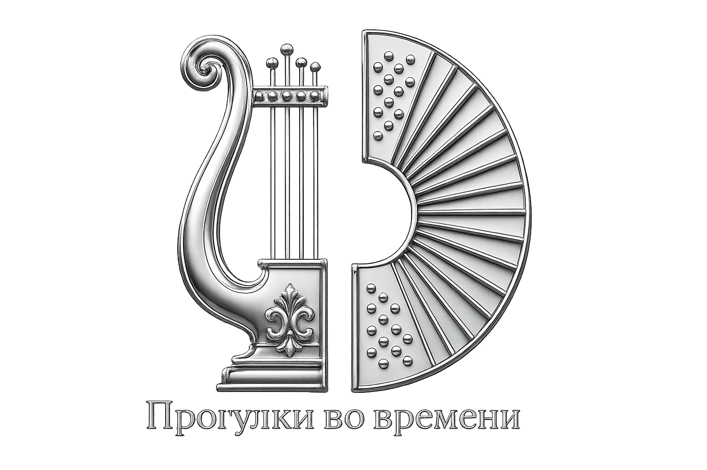
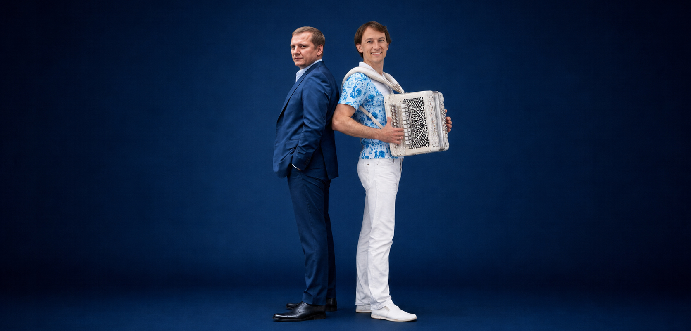
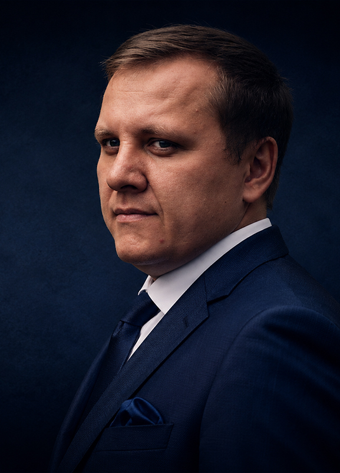
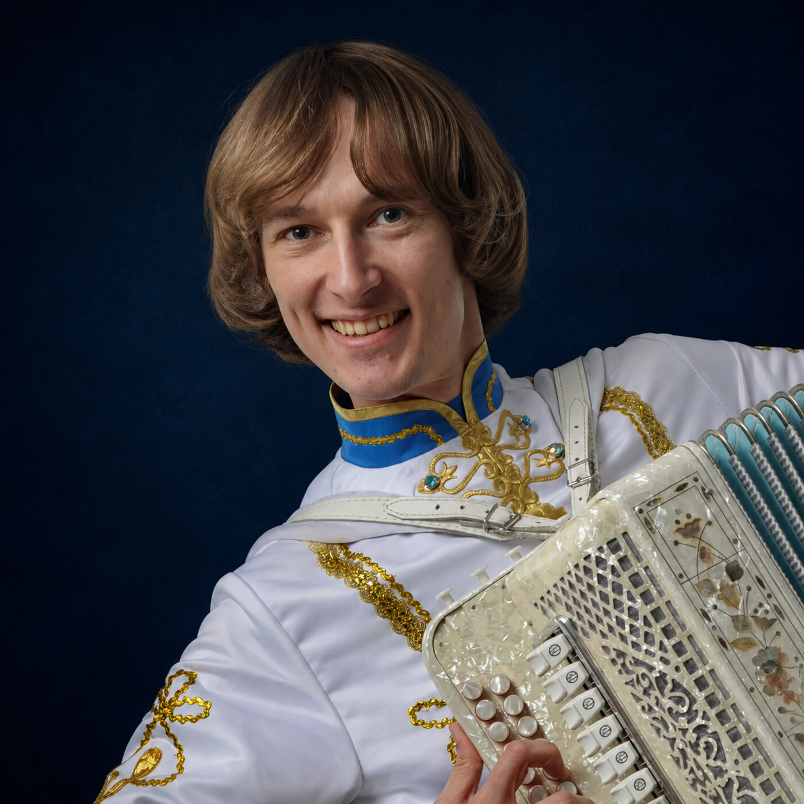
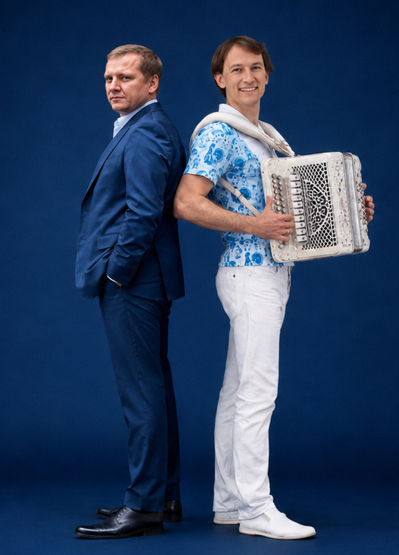

→
01Опера
Арии, романсы и академический вокал в камерной сценической подаче.


OPERA × RUSSIAN HARMONY
Два музыканта экстра-класса в одном проекте
«Прогулки во времени» — премиальный концертный проект, где мировая опера встречается с живым звучанием русской гармони.
Это не обычный концерт, а luxury cultural experience для камерных залов, курортных отелей и private events.
Формат создан для сильных площадок: камерные сцены, курортные отели, культурные программы и закрытые события высокого уровня.

BARITONE · WORLD OPERA STAGES

RUSSIAN HARMONY VIRTUOSO
ARTISTS
Арии, романсы и академический вокал в камерной сценической подаче.
Русская гармонь как инструмент памяти, энергии и живой традиции.
Музыкальное путешествие по русской и европейской культуре.

WHERE WE PERFORM
PREVIEW
BOOKING
Для luxury hotels, курортных гостиниц, камерных залов, private events, культурных программ, санаториев premium-класса и статусных мероприятий.
Связаться с агентством